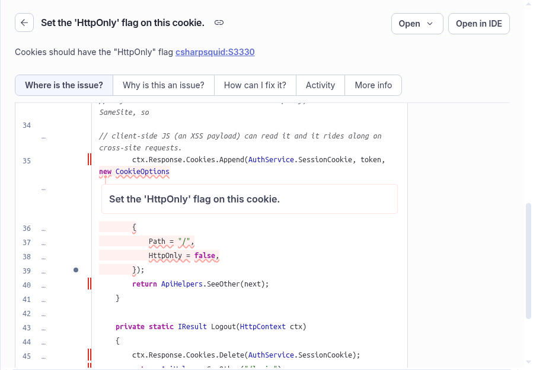
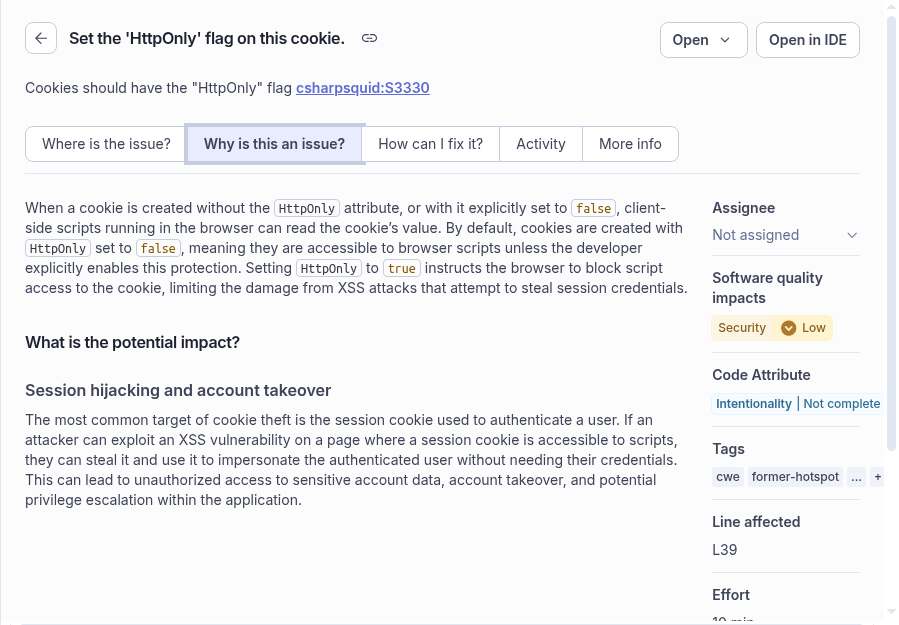

Teacher-provided snapshot. No SonarCloud account or network connection is required to analyze these files.
| Project | mikelopster_sonarqube-training-team-notes |
|---|---|
| Branch | master (main branch label in this Sonar project) |
| Issue / rule | AaEkwyrvn3atgy46CG_O / csharpsquid:S3330 |
| Status / classification | OPEN / VULNERABILITY / security impact LOW |
| Analysis ID | 651e6e22-465a-40ac-8548-6e8c7bad1e10 |
| Analysis date | 2026-10-10T07:40:51+0000 |
| Analysis SCM SHA | UNKNOWN (not exposed by the inspected API) |
| Exported | 2026-10-18T06:14:47.740656+00:00 |

Cropped from the authenticated issue page. Account navigation was excluded; the finding/source pixels were not rewritten.

Rule identity: Cookies should have the "HttpOnly" flag (csharpsquid:S3330). Refer to rule-context.json for the exported classification and standards.
This rule highlights cookie confidentiality from browser scripts. The presence of a finding does not by itself prove a successful exploit or establish the security of the whole application.
No patch or tests were executed to build this evidence packet.
mikelopster_sonarqube-training-team-notes:api/Endpoints/AuthEndpoints.cs
Raw SHA256: 18310475693c4cb410773fc048320bc0793ad060aa8b8ff74d0c269b00479a5e
Normalized SHA256: 235986974225f31169c701da73fa0f1a96fe4bdf80756652907d40746972b0fe
01 using Dapper;
02
03 namespace TeamNotes.Api.Endpoints;
04
05 public static class AuthEndpoints
06 {
07 public static void MapAuth(this IEndpointRouteBuilder app)
08 {
09 app.MapPost("/api/auth/login", LoginAsync);
10 app.MapPost("/api/auth/logout", Logout);
11 }
12
13 private static async Task<IResult> LoginAsync(HttpContext ctx, Database db, AuthService auth)
14 {
15 var form = await ctx.Request.ReadFormAsync();
16 string email = form["email"].ToString();
17 string password = form["password"].ToString();
18 // Lab 2 open redirect: "next" is sent straight to the Location header, no same-site check.
19 string next = string.IsNullOrEmpty(form["next"].ToString()) ? "/notes" : form["next"].ToString();
20
21 await using var conn = await db.OpenConnectionAsync();
22 var user = await conn.QueryFirstOrDefaultAsync<UserRow>(
23 "SELECT id, email, display_name, password_hash, role, team_id FROM users WHERE email = @email",
24 new { email });
25
26 if (user is null || !auth.VerifyPassword(password, user.password_hash))
27 {
28 return ApiHelpers.SeeOther("/login?error=1");
29 }
30
31 string token = auth.CreateSessionToken(new Session(user.id, user.team_id, user.role, user.email));
32
33 // Day 1 vuln: the session cookie is not HttpOnly, not Secure and has no SameSite, so
34 // client-side JS (an XSS payload) can read it and it rides along on cross-site requests.
35 ctx.Response.Cookies.Append(AuthService.SessionCookie, token, new CookieOptions
36 {
37 Path = "/",
38 HttpOnly = false,
39 });
40 return ApiHelpers.SeeOther(next);
41 }
42
43 private static IResult Logout(HttpContext ctx)
44 {
45 ctx.Response.Cookies.Delete(AuthService.SessionCookie);
46 return ApiHelpers.SeeOther("/login");
47 }
48 }
49 Observed repository revision: 158536e0ec903fc7fa297adcf81116b923280878. This is not asserted to be the Sonar analyzed SCM revision.
Whole-file match: NO. The cookie block matches exactly: Sonar lines 35–39 correspond to learner lines 41–45. Logging-related changes outside that block remain visible in the diff below.
Learner raw SHA256: 838b94964f4d01dab07b9ef027066f68a73996e506e89a89e86b03ddb4ccd66d
Matching cookie block SHA256: b8e8d895181948def21f497b42f525dc392a12c7a407ea0c966380c06ce332b7
--- SonarCloud exported AuthEndpoints.cs
+++ Learner baseline 158536e0ec90 AuthEndpoints.cs
@@ -10,7 +10,7 @@
app.MapPost("/api/auth/logout", Logout);
}
- private static async Task<IResult> LoginAsync(HttpContext ctx, Database db, AuthService auth)
+ private static async Task<IResult> LoginAsync(HttpContext ctx, Database db, AuthService auth, ILoggerFactory loggers)
{
var form = await ctx.Request.ReadFormAsync();
string email = form["email"].ToString();
@@ -23,12 +23,18 @@
"SELECT id, email, display_name, password_hash, role, team_id FROM users WHERE email = @email",
new { email });
+ // Lab 7 logging: "debug" log lines left in production write the typed password and the
+ // issued session token into the application log, and nothing is recorded in audit_log,
+ // so an attack leaves no security trail while the logs themselves leak credentials.
+ var log = loggers.CreateLogger("TeamNotes.Auth");
if (user is null || !auth.VerifyPassword(password, user.password_hash))
{
+ log.LogWarning("Login failed for {Email} with password {Password}", email, password);
return ApiHelpers.SeeOther("/login?error=1");
}
string token = auth.CreateSessionToken(new Session(user.id, user.team_id, user.role, user.email));
+ log.LogInformation("Login ok for {Email}, session token {Token}", email, token);
// Day 1 vuln: the session cookie is not HttpOnly, not Secure and has no SameSite, so
// client-side JS (an XSS payload) can read it and it rides along on cross-site requests.
@@ -46,4 +52,3 @@
return ApiHelpers.SeeOther("/login");
}
}
-
Scope: source-level evidence for one finding. Build, dependencies, deployment, runtime exploitability and post-patch analysis are not verified by this file/block comparison.